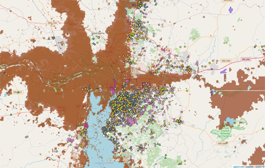
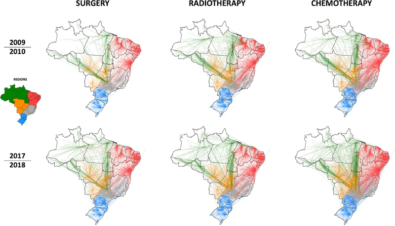
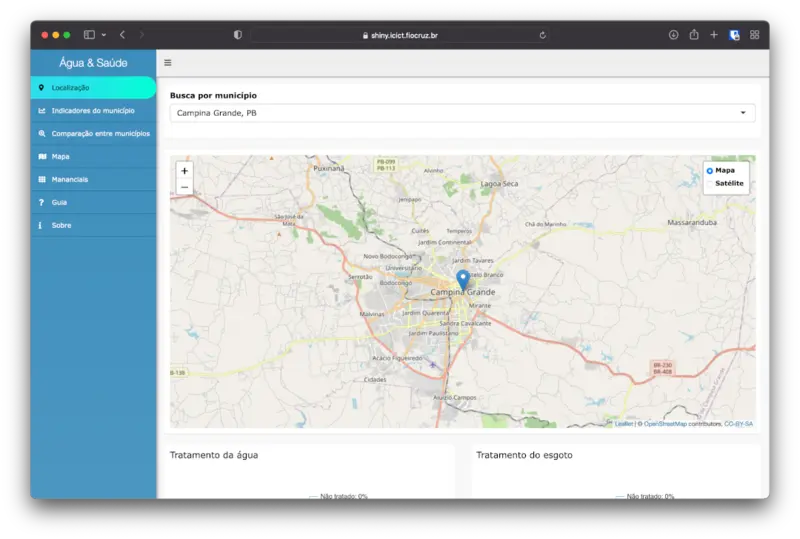
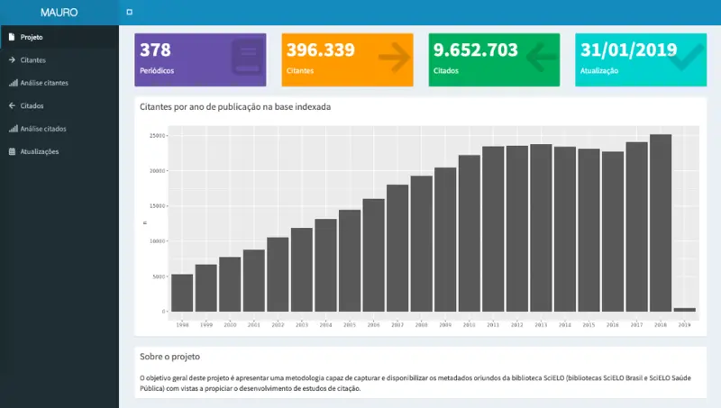
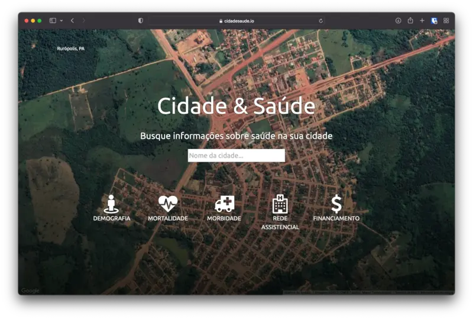

Raphael Saldanha
CV
Projects
Packages & Code
Datasets
Publications
Talks
Photos
Blog
Projects

Saúde RS
Saúde RS is a fast response project to the Rio Grande do Sul flooding disaster that occurred in Brazil on May 2024. It presents maps and data sources about the flooding…
Harmonize
Harmonizing multi-scale spatiotemporal data for health in climate change hotspots.
MonitoraCovid-19
Covid-19 monitoring.
MonitoraCovid-19 project is an institutional response from Fiocruz to the Covid-19 pandemic.
OuvSUS
SUS Ombudsman.
A partnership between PCDaS, Instituto Aggeu Magalhães – Fiocruz Pernambuco, and the Brazilian Ministry of Health ombudsman. The project aims to collect, organize and…
PNS
Pesquisa Nacional de Saúde.
This project is a partnership between PCDaS and other researchers at Fiocruz and IBGE. The PNS is a national inquiry about the population health conditions with two…
Cross-border malaria
In partnership with IRD.
This was the second project that I got involved at Fiocruz with the Climate and Health Observatory. It was a project in partnership with the French IRD (Institute de…

Redes de Cuidado
Cancer patients displacement and network analysis.
This project was a partnership with PCDaS and CDTS. The project studied the flow of cancer patients receiving treatment in Brazil between municipalities.
ArboAlvo
Stratifying arboviruses risk.
Conducted at the Instituto Oswaldo Cruz (IOC), the project ArboAlvo’s objective is to stratify arboviruses risk into national and intra-municipal levels, considering…
Onde estão nossas doenças?
Museum exhibition.
This was a very special project, where we were invited to develop a museum exhibition at Fiocruz. On this set, we present to the visitors the relationship between health and…
PMM
Projeto Mais Médicos.
“Projeto Mais Médicos” was the first project that I got involved with at Fiocruz, through the PCDaS initiative. I was in charge of developing a data dashboard and to…

Água & Saúde
In partneship with ANA.
The first project that I got involved at Fiocruz with the Climate and Health Observatory. It was a project in partnership with ANA (Agência Nacional das Águas).

Mauro
a Metadata Automatic Retrieval system for Updated References and cited Objects from Scielo.
“Mauro” was a research project that I initiated during my Ph.D. at Fiocruz, when I was taking some courses about technological information on health.

Cidade & Saúde
Accessible health information about Brazilian municipalities.
“Cidade & Saúde” is a self-funded Project that I started just after my master’s and before my Ph.D.
No matching items
Back to top